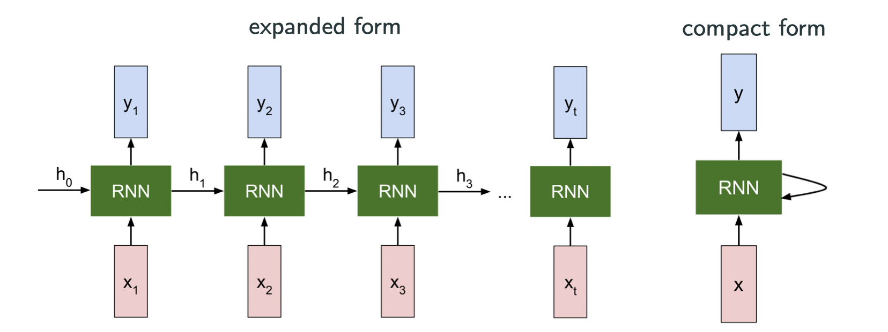
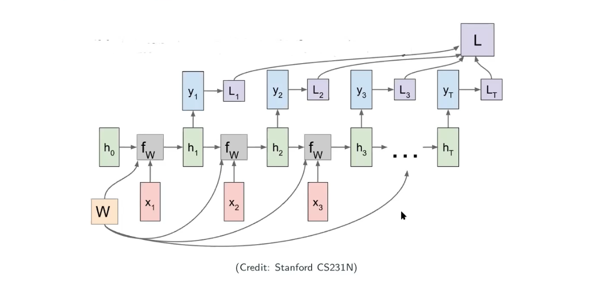
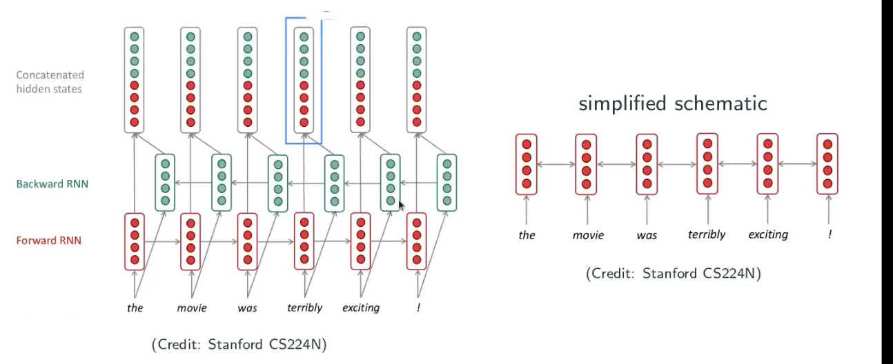

Recurrent Neural Network (RNN): Overview
Acknowledgement: This course (CSCI 8980) was offered by Prof. Ju Sun at the University of Minnesota in Fall 2020. Pictures of slides are from the course.
Recap of CNN
We didn’t talk about scattering transform conlutional network. It is also a deep neural network but it is not trainable; instead, it’s a deterministic deep learning neural network. The weights of the network are from a kind of mathematical transoform. While CNN is a blackbox, scattering transform is more rigorous and provable.
CNNs are not only for images. Ideally, it’s for tensors where axis directions do/should not matter. For instance, if I flip the image, it won’t influce my detection performance so its axis directions don’t matter, which implies that CNN will work. A counterexample is video. In video, timeflame is a meaningful direction. Playing forward and playing backward are different if my task is to analysis the moment of filling a swimming pool with water. Playing forward is the water level increasing but backward is another totally different event.
For applications that directions do matter, what really matters is usually the temporal sequences, such as disease prognosis (development from day 1 to day 500 for instance), video generation, speech to text, etc.
Another sequence is lexical sequence, which includes today’s Natual Language Processing (NLP), such as machine translation (English and Chinese), typing prediction (Gmail smart compose), semantic classification, etc.
Basic RNNs
Basic setup
A sequence:
A state-space model: denotes the state, and state translation modeled by the recurrence formula
with optional output

The image above is from Stanford CS231N. Let’s look at an very simple example:
where are shared across the sequence, and
is my past state and
is my current input.
Example: a statistical language modeling
- Language modeling is a task of predicting future words.
- Statical formalism: given a sequence of words
, compute the next possible word after a sequence of words given
where can be any word from a vocabulary
, or sometimes given some text
,
- Applications: Google smart search (fill out what you want to search for you, before you hit enter), and Gmail smart compose (where you can tab and have the computer finish your sentences).
Representing words: word embedding
How to represent words?
- One hot encoding
This may work, but it’s really inefficient, because the dimension would be very high. Think about that, some words may be similiar meaning (distance), and some words may have meaning falling between two words. If you image a hyper-cube, one-hot encoding makes all words to be the corner of the hyper-cude, and it’s hard to represent a word that has a meaning falling between two words.
- word-to-vector embedding: map words into dense vectors centain arthmetic operations are consistent with semantics.
A simple RNN language model
In NLP, people usually use hypertangent function as the activation function. Our training data could be any trunk of text. It could be a paper, a book, a paragraph, etc, and that’s my corpus/collection of words. First you will encode each word into a vector and then pass into the RNN, what you will get as a output is a probability. I will compare the output with my one-hot encoding groud truth then I will get the loss. When we sum up all the loss and divide by the training example, now we have the loss of the model as shown below.
Training the model
- Step 1: collect a large corpus of text, i.e., a long sequence
- Step 2: feed
into the model, and compute ouput distribution
for each
- Step 3: define loss, e.g., cross entropy between
(one-hot encoding of
)
- Step 4: gather and average all losses:
- Step 5: optimization: SGD
Note that people are using SGD in common practices, but there are some confusion of implication. Because for SGD we assume all summation terms are independent and identically distributed (iid) in the objective, but here each term is determined by the previous term. It’s definitely not iid but probably because some other unknown reasons/implications that makes it work.
Generate texts
starting from and the word “my”, repeat
- compute
- feed the word as input to the next step
Vanishing/exploding gradient
How to compute gradients?
The vanishing gradient problems are not significant in CNNs but they are still there and many CNNs people ignore it. But what we’re emphaszing here is that it’s very significant in RNNs.
Can we use auto differentiation in RNNs? Yes! Because it’s firstly sharing the weights and secondly the computational graph is acyclic directed graph (no loops) as image below.

Look into the gradient
In the image above, we don’t have to worry about because that’s the given value and we know the gradient of a given value is always zero. The variables are
and
and optimization variable is
. Let’s look at the computation graph above again. The total loss
is equal with the summation of the loss (
of each state. Since we know the derivative of the summation is the same as the summation of the derivative, so we have the following:
What’s wrong with the gradient?
Consider above
-
For intuition, consider identity activation (could be hypertangent, but we just assume it’s identity here) at this moment, i.e,
, i.e., the largest singular value of
, scale as
.
- When
, gradient explodes if
large.
- When
, gradient vanishes if
- When
-
What happens with the tanh activation?
– effectively always smaller
- We have
In this case of using hypertangent, gradient vanishing is more common.
Gradient clipping
When the gradient is too large (exploding), rescale (i.e., clip) it. Let be the gradient and
be a threshold, because when we’re doing gradient descent, what we’re really caring about is more the direction rather than the magnitude.
You just normalize the direction and rescale by the factor , by clipping large gradient you can avoid the very large movement as the left graph above.
Problem with gradient Vanishing
If we look at the image above, when I evaluate the value of the current node with earlier node, the gradient can be exponentially small such as when
is large, which implies ealier states have little impact on latter states. However, what we want in sequential modeling is that we want to make sure what we’ve seen have reasonable influence on the current state.
The problem is that we hope RNN can encode reasonably long-term historial/contextual information.
Long Short-Term Memory (LSTM)
The key idea of LSTM is to introduce a cell state to explicitly store history, beside the hidden state
. It build a universal storage. No matter how far you’re concerning the time step, you can access to the information on the “universal storage”.
All the four gates in the images are a vector, and every step we not only update the state now but also write new things into the universal storage (i.e., cell).
Gated Recurrent Unit (GRU)
There is a simplified version of LSTM. GRU doesn’t have the universal storage (i.e., cell), but a state with two gates. Each time we write some new content and make it as a linear combination to update the current state . Both of LSTM and GRU are popular in the field, but LSTM is more powerful but slower in training.
Do they save the vanishing gradient?
If we ask ourselves what is the Jacobian of the cell state , it’s simply the diagonal matrix of
. There is no multiplication by
, so it’s not computational complicated. If we track the flow backward, the dependency between
and
is only
.
If this looks familiar to you, it’s actually somewhat similiar to ResNet (they’re all skip-connections! Skip-connection allows long-distance dependency), as well as a extreme version of ResNet, which is DenseNet. But there is not a solid understanding that if we really solve the gradient vanishing/exploding problem.
Do we need to modify the architecture?
The problem here is that can have singular values other than 1, becaues greater than 1 leading to explosion while smaller than 1 leading to vanishing gradient. So, a natual solution is to keep all singular values to be 1, but
is square, which implies that
is orthogonal.
So we can formulate the problem as:
an instance of Riemannian optimization. This is a constrainted optimization problem, which is still largely unexplored in deep neural networks.
Modern RNNs
Bidirectional RNNs
This is to deal with situation such as “… terribly exciting …”. The RNN always tryes to keep the historical information but not utilize the future information, once it reaches to the word “terribly” it may guess the sentence is negative. However, if you read “terribly exciting” together it’s actually expressing positive meaning. So, people have developped a RNN reads both forward and backward – Bidirectional RNNs.

It’s only useful whenever you have the full setences, and it cannot be used in language modeling because you don’t know the future information (user hasn’t typed yet).
Deep RNNs
Hidden state can be thought of representation, and so far we only have one layer, how about going deeper for more powerful representation learning.
Typically, people only have only a few layers (no more than 20), because there is a price to pay – computational intensive.